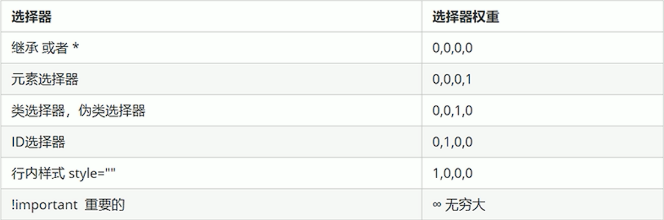

css三大特性：
层叠性 继承性 优先级
1. 层叠性
样式冲突 执行就近原则 样式离结构近的执行
2. 继承性
子标签会继承父标签的样式(主要继承的是和文字相关的样式text-,font-,line-这些元素可以继承，=,以及color属性)
行高继承规则：子元素继承的行高为父元素子元素当前像素的行高倍(子元素的字体大小*父元素的行高)
我的行高通过继承应该是我本身的字体的大小乘以父亲的行高
我本身没有给定字体大小，但是我的父亲有字体大小，所以我继承了父亲的字体大小为20px，因此我的行高是继承来的字体大小乘以父亲的行高
body部分行高
权重
权重会叠加，但是没有进位
